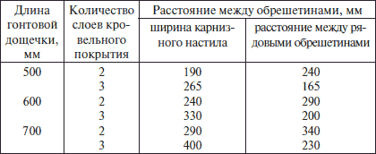
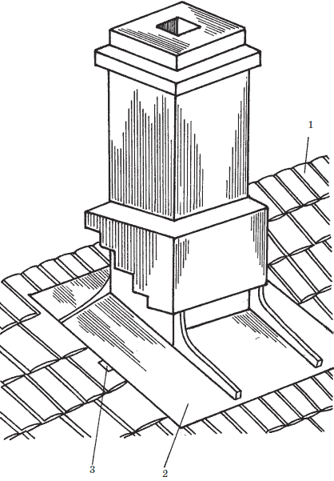
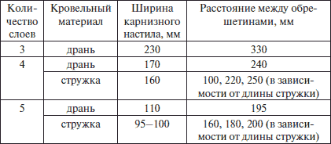
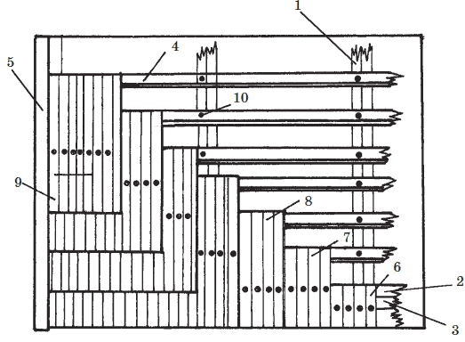
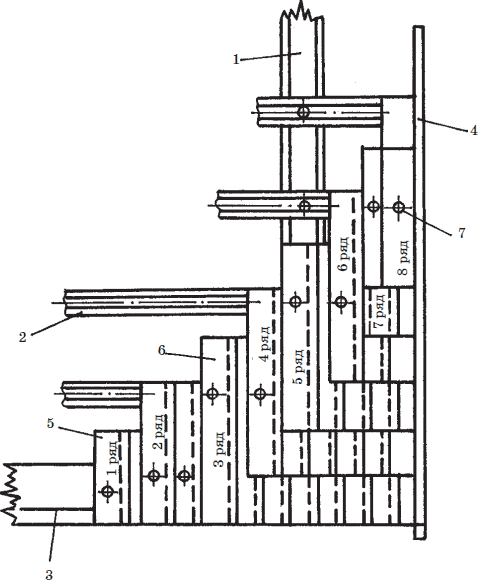
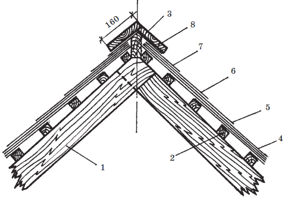
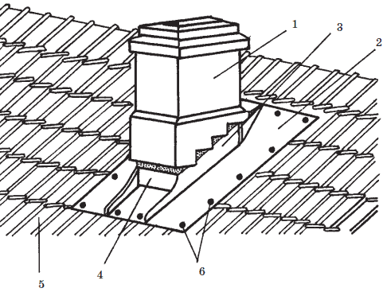
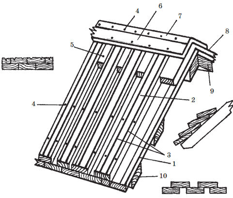

Деревянная кровля.
 Кровля из гонта
Кровля из гонта
Кровля из гонта выполняется по обрешетке из брусков 50х50 мм, расстояние между обрешетинами зависит от длины гонтовых дощечек и количества слоев кровельного покрытия.
Совет
Двухслойную кровлю устраивают для хозяйственных построек, а трехслойную – для малоэтажных жилых домов. Причем в двухслойной кровле гонтовые дощечки укладываются внахлест на / длины гонта, а в трехслойной – на / длины.
Каждая дощечка прибивается к обрешетке одним гвоздем, но из-за многослойности кровельного покрытия головка гвоздя оказывается скрыта дощечкой верхнего ряда.
Укладка ведется снизу вверх (от карниза к коньку) и справа налево. Каждая гонтовая дощечка имеет с левого бока шпунтовую канавку, в которую вставляется заостренное ребро соседней дощечки. Все заостренные ребра гонта должны быть направлены в одну сторону. Прикарнизные и приконьковые ряды выкладываются укороченными дощечками. В ряду гонт стелется вразбежку, то есть в виде зигзагообразного рисунка, когда стык между дощечками нижнего ряда совпадает с серединой гонтовой дощечки верхнего ряда. Чтобы обеспечить такой способ укладки, заранее заготавливаются половинчатые дощечки, с которых начинают укладку каждого четного ряда.
Таблица 12. Расстояние между обрешетинами в зависимости от длины гонтовых дощечек и количества слоев кровельного покрытия
Внимание!
Во избежание загнивания гонтовой кровли все шпунтовые канавки смазывают противогнилостной мастикой или обрабатывают древесным антисептиком.
Конек покрывают двумя обтесанными досками поверх основного кровельного покрытия. Ребра отделывают гонтовыми дощечками, обуженными со стороны острой кромки на / – / ширины; причем ряд, начатый на одном скате, продолжают и на смежном скате с переходом через ребро. Для более плотной укладки реберный брусок закругляют. Гонт выкладывают веером с использованием вставных рядов (через каждые 2–3 ряда).
Для покрытия разжелобков и ендов также понадобятся вставные ряды (через каждые три ряда), гонтовые дощечки в которых выкладывают веерообразно. Для разжелобковых покрытий используют дощечки традиционной и трапециевидной формы.
Совет
Воротник дымовой трубы выполняется из стальных фартуков подобно воротнику драночной кровли. Единственное отличие – в том, что боковые фартуки воротника крепятся не поверх рядового покрытия, а под него ( рис. 36).

Рис. 36. Кровля из гонта. Устройство воротника дымовой трубы: 1 – гонтовая дощечка; 2 – воротник из кровельной стали; 3 – скоба для крепления напуска над продольным краем воротника
Кровля из драни и стружкиКровля из драни и стружки выполняется по разреженной деревянной обрешетке из брусков сечением 50х50 мм или жердей толщиной 60–70 мм обтесанных на два канта. Шаг между обрешетинами зависит от количества слоев кровельного покрытия (а древесная кровля – это всегда многослойное покрытие) ( табл. 13).
Таблица 13. Расстояние между обрешетинами в зависимости от количества слоев кровли из драни и стружки
Обрешетины крепятся гвоздем при каждом пересечении со стропильной ногой.
Прикарнизная обрешетина под драночную кровлю должна быть выше остальных на 8-10 мм. Высоту бруска увеличивают уравнительной планкой.
Кровельные работы на скате ( рис. 37 и 38) ведутся снизу вверх и справа налево одновременно в 3–4 рядах. Для удобства запас стружки или дранки находится в возке кровельщика. Прикарнизный и приконьковый ряды выкладываются из укороченных пластинок. Все остальные штучные материалы основного покрытия должны быть полномерными. Дрань укладывается ворсистой стороной вверх с направлением ворса по стоку воды.

Рис. 37. Четырехслойное покрытие крыши дранью: 1 – стропильная нога; 2 – карнизный настил; 3 – выравнивающая планка; 4 – брусок обрешетки; 5 – ветровая доска; 6 – укороченная драница (1/4 полной длины); 7 – укороченная драница (1/2 полной длины); 8 – укороченная драница (3/4 полной длины); 9 – полномерная драница; 10 – гвоздь

Рис. 38. Четырехслойное покрытие крыши стружкой: 1 – стропильная нога; 2 – брусок обрешетки; 3 – выравнивающая планка; 4 – ветровая доска; 5 —укороченная стружка (дранка); 6 – полномерная стружка (дранка); 7 – гвоздь
Трехслойную кровлю устраивают для хозяйственных и временных строений, при устройстве которых вышележащие кровельные ряды из драни или стружки перекрывают нижележащие на / длины полномерной пластинки. Для жилых зданий рекомендуется четыре и пять слоев кровли. При четырехслойном покрытии ряды перекрывают друг друга на / длины кровельных пластинок, а при пятислойном – на / длины.
Прикарнизные и приконьковые ряды выкладываются в несколько слоев строго по нижнему обрезу карниза или верхнему обрезу конька.
На заметку
Каждая дранка (стружка) прибивается к обрешетке одним кровельным гвоздем, но так как слоев образуется сразу несколько, то в результате каждая отдельная пластинка оказывается закрепленной несколькими гвоздями. При этом головки гвоздей скрыты вышерасположенными слоями.
Ендовы и разжелобки из деревянных кровельных материалов очень трудоемки, поэтому их лучше покрыть кровельной сталью.
Конек крыши ( рис. 39) выполняют из двух строганых досок 4, которые укладывают на готовое покрытие из драни или стружки и прибивают к коньковому брусу 3 и к обрешетке 2. Сверху брусок затесывают, чтобы его стороны соответствовали уклону кровли.

Рис. 39. Возведение конька крыши: 1 – стропильная нога; 2 – обрешетка; 3 – коньковый брус; 4 – строганые доски; 5, 6, 7 – дрань; 8 – доска
Ребра крыши при драночной кровле покрывают так же, как и конек. Воротник дымовой трубы ( рис. 40) собирают из стальных фартуков 2, 3 и 4. Причем до его крепления на скате выкладывают драницы (стружки) 5 таким образом, чтобы сначала укладка была закончена снизу и с одного бока от ствола трубы, а затем – с другого бока. В последнюю очередь выкладывают один кровельный ряд за трубой. Горизонтальные отвороты воротника крепят поверх кровли и обрешетки шурупами 6 или гвоздями через каждый 200–300 мм. Между собой фартуки крепятся фальцевыми соединениями с предварительной промазкой кромок суриковой замазкой. Скат за трубой покрывают поверх воротникового отворота с нахлестом в 150 мм.

Рис. 40. Кровля из драни. Устройство воротника дымовой трубы: 1 – дымовая труба; 2 – верхний фартук; 3 – боковой фартук; 4 – нижний фартук; 5 – драницы; 6 – шуруп
Кровля из тесаОснованием для тесовой кровли служит обрешетка из брусков сечением 60x60 мм или жердей диаметром 80 мм, обтесанных в два канта. Бруски кладутся на стропила с шагом 600–800 мм ( рис. 41).

Рис. 41. Способы устройства тесовой кровли: 1 – доска нижнего слоя; 2 – доска верхнего слоя; 3 – желобок для стока воды; 4 – гвоздь; 5 – вкладыш; 6 – коньковая доска; 7 – полоса из кровельной стали шириной 100 мм; 8 – рубероидная лента; 9 – коньковый дощатый настил; 10 – брусок обрешетки
Для тесовой кровли берут доски толщиной 20–25 мм из древесины хвойных пород. Укладывают их в два слоя: доски нижнего слоя кладут сердцевиной вниз и прибивают к обрешетке одним гвоздем; доски верхнего слоя стелят на нижние так, чтобы получился половинный закрой. Сердцевина верхних досок должна быть обращена кверху. Их прибивают к обрешетке двумя гвоздями в каждом пересечении. Доски верхнего слоя должны быть остроганы со всех сторон, а доски нижнего слоя снизу не острагиваются. Для стока воды вдоль кромок каждой доски делают желобки.
Существует два способа укладки досок при устройстве тесовой кровли: поперечный (поперек ската) и продольный (вдоль ската). Продольная кладка более практично и широко используется.
В продольном направлении доски могут быть уложены:
• впритык в два слоя, при этом стык между досками верхнего слоя приходится на середину доски нижнего слоя;
• в один слой с образованием нащельников, при этом нижний слой делается сплошным, а верхние доски перекрывают кромки нижнего слоя на 4050 мм;
• доски нижнего слоя укладываются с зазорами, а верхнего – перекрывают их кромки не менее, чем на 50 мм.
Верхние доски крепят к обрешетке двумя гвоздями в месте каждого пересечения.
Поперечный способ укладки досок допускается для временных построек, при этом не требуется обрешетки. Верхние доски перекрывают нижние на 40–50 мм. Каждое пересечение досок со стропилами фиксируется одним гвоздем.